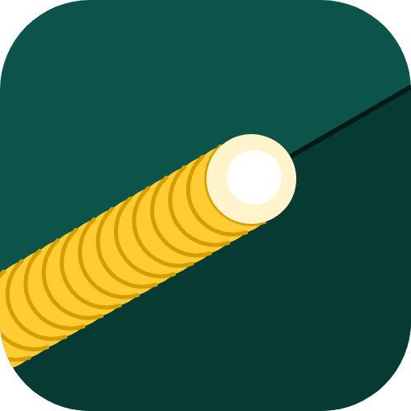
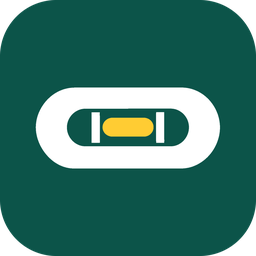
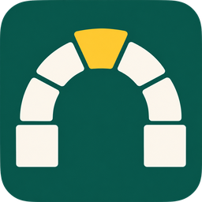
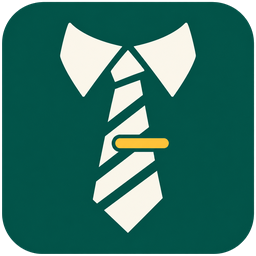

WayneUI
2.0.8 Contrast | AA
Wayne State's design system. It draws every page of WELD's Vue front end, light and dark, and nothing else is allowed to.
$ pnpm verify ✓ tokens built ✓ contrast AA, every pair ✓ axe 0 violations bar: WCAG 2.2 AA

The Wayne State app stack
WELD stands for Wired, Everything, Linked, Deployed.
Many parts, one piece.
WELD is a Laravel 13 app with Inertia and Vue, and the rest of the stack is already in it: sign-in, security headers, the standards check, code style, CI and WayneUI. It's one install. Rename it and start on your own pages.
$ composer create-project waynestate/weld my-app
Any other shape? Sourdough starts every one of the five, from raw PHP to Vue islands, with the same sign-in, headers and checks.
Start here
Yes, this is a lot of packages. Most of you can ignore that. Install WELD, run the one command in step 2, and you have a working app with all of it set up. We split the stack into separate projects because Wayne State developers work on very different apps, and you shouldn't have to buy the whole shop to borrow one torch.
Composer makes a fresh copy, writes .env, sets the app key and runs the first migration.
composer create-project waynestate/weld my-appThis is the one command. You only need Docker, because PHP and Node run in the containers. Then open localhost:8000.
# macOS, Linux
bin/weld.sh up
# Windows (PowerShell)
.\bin\weld.ps1 upRuns the tests, Pint, PHPStan and composer audit, the same command CI runs. The standards check is separate: composer proctor.
composer ciWant it the way Citadel runs it? Parity runs the same folder on Citadel's own PHP image, behind its proxy, with MySQL 5.6: parity init --mysql, then parity up. Step 2 stays the everyday bench; Run it like Citadel has the rest.
Sourdough makes the other shapes: sourdough new my-app for raw PHP, sourdough new my-app --laravel for Laravel with Blade, sourdough new my-app --laravel --vue for Vue islands. WELD is the Inertia and Vue shape, ready-made.
Already have an app?
Most Wayne State apps are older than this stack. Some are raw PHP, some are Laravel, and plenty only need sign-in or an upgrade. That's why every piece also works on its own. WELD is simply all of them installed together.
I'm starting a new app
 WELD
or
WELD
or
 Sourdough
Sourdough
Pick WELD for Laravel with Inertia and Vue, ready-made. Pick Sourdough to start any other shape, or to shape one yourself.
My raw PHP app just needs sign-in
Adds CAS or Entra ID sign-in to a raw PHP or Laravel app. Your app keeps its own session.
I'm stuck on PHP 7
Upgrades PHP and Laravel one version at a time, and has a playbook for Vue 2 to 3. It never commits; you read the diff and merge it.
I'm deploying to Citadel
 Squire
and
Squire
and
Squire writes the build and release scripts and the health check Citadel expects. Parity runs your app on Citadel's own image on your computer first.
I want CI on every push
GitLab CI components for PHP tests on each supported version, PROCTOR, Composer audit, Pint, PHPStan and ESLint.
I want safe defaults at runtime
Sends the security headers and CSP, hardens the session cookie and checks proxies before your first page is served.
I want it to look like Wayne State

WayneUIWayne State's design system. It works in static HTML, raw PHP, Blade and Vue.
I want Citadel to sign people in before my app
A gateway that signs people in through Entra ID before they reach your app. Your app then checks one small signed token.
I look after a lot of apps
Scans your apps and reports which PHP, Laravel and sign-in package each one runs, checked against CREED's support dates.
I code with an AI agent
An MCP server your agent can ask about the stack. It answers from CREED's policy file, not from what the model remembers.
CREED writes the rules down and PROCTOR grades your app against them. Pinstripe is the code style. Preflight runs all of it in CI.

CREED the rules
The written standards, plus policy.json: which PHP, Laravel and Node versions are supported.
PROCTOR the grader
Reads your composer.json and lock file and reports each check against CREED as pass, warning, info or fail.

Pinstripe the code style
Shared presets for Pint, PHPStan, Rector, ESLint and Prettier. Your app adds only its own exceptions.
Preflight the runner
The CI pipeline that runs all of it, and your tests, on every push.
WELD already has all four set up. Run composer ci and composer proctor on your machine, and GitLab runs both through Preflight on every push.
The whole stack
Every project in the stack on one sheet: what it holds, its latest release, where it stands, and where to read more. WayneUI is joint 00, because everything else is drawn on it.
The interface
Wayne State's design system, one contract on four paths: static HTML, raw PHP, Blade and Vue. It draws every page of WELD.
The standard
61 numbered practices and policy.json, the support dates PROCTOR, Rollcall and ADVISOR read. Policy refreshed 2026-11-08.
The grader
Checks an app against CREED from the command line and gives the deploy gate its go or no-go. 0.12 adds warnings for a missing Composer release cooldown and a lock file git does not track.
The code style
Presets for Pint, PHPStan with Larastan, Rector, ESLint and Prettier; 0.3.0 bans SQL joined from strings. On Packagist; npm still has 0.1.4.
The CI runner
GitLab CI/CD components: tests on PHP 8.3, 8.4 and 8.5, PROCTOR, the audit, an SBOM, secret detection, accessibility, a portability boot of the image, Pint, PHPStan and ESLint.
The runtime baseline
Security headers and a nonce CSP, a hardened session, the proxy check, /up and JSON logs, for raw PHP, Laravel and PSR-15 apps alike.
Sign-in
CAS, OpenID Connect, an OAuth2 token or the Drawbridge gateway, and your app keeps its own session. Raw PHP, Blade and Inertia.
The starter
Bakes all five app shapes with sign-in, headers, checks, CI and the deploy kit already in, and saves each bake's plan in the app. It adopts an app it did not make, so feed can keep it current, and 0.4.0 puts Pinstripe 0.3 in every shape.
The deploy kit
Citadel's build, release and health-check scripts from templates, squire doctor, and one portable image for other hosts. Local runs on Citadel's image move to Parity, next joint down.
Citadel, at home
Runs any app on Citadel's own PHP image, behind Citadel's proxy, with MySQL 5.6. One program for Windows, macOS and Linux, on Podman or Docker; the desktop app follows.
Upgrades
Plans PHP and Laravel upgrades as hops on Rector and gates each hop with your tests on the target PHP. It never commits for you.
The fleet report
Scans the apps and reports each one's PHP, Laravel, sign-in package and PROCTOR result against CREED's dates, with an end-of-life burn-down. It only reports.
The sign-in gateway
One OpenID Connect client for Entra ID in front of Citadel apps, passing a signed assertion SESAME checks. Not in front of any apps yet.
The MCP server
Nine read-only tools your coding agent can ask about the stack. Every answer names the file it came from.
All of the above
You are here: Laravel 13 with Inertia 3 and Vue, every joint above already made. Clone it and rename it.
Stable: released at 1.0 or later. In use: a 0.x release that WELD or the apps Sourdough bakes already run on. Pilot: built and tested, and not yet in front of a real app. Each release is the latest tag on that project's main branch, checked on November 10, 2026.
Up close
The same projects with a bit more detail. The first seven are part of WELD. The next six work around your app: upgrades, the fleet scan and the MCP server, then the three that deal with Citadel: deploys, Citadel on your own computer and the sign-in gateway. After those come Sourdough and the one still on the drawing board.
2.0.8 Contrast | AA
Wayne State's design system. It draws every page of WELD's Vue front end, light and dark, and nothing else is allowed to.
$ pnpm verify ✓ tokens built ✓ contrast AA, every pair ✓ axe 0 violations bar: WCAG 2.2 AA
0.1.9 Volume | Eleven
The written standards, plus policy.json with the support dates for PHP, Laravel, Node, MySQL, Vue and Inertia. PROCTOR, Rollcall and ADVISOR all read it.
$ less policy/policy.json php 8.3, 8.4, 8.5 laravel 12, 13 node 22, 24, 26 volume eleven

1.4.0 Fit | Snug
In WELD it runs in the global middleware, so every response carries the security headers and CSP.
$ curl -sI https://my-app.apps.wayne.edu csp nonce, strict-dynamic hsts 1 year frames SAMEORIGIN

0.7.3 Says | Open
Sign-in through CAS, Entra ID or Drawbridge. Locally, a fake driver signs you in.
$ curl -sI localhost:8000/dashboard 302 Found location /login → off to CAS and back

0.12.0 Strictness | Kind
In WELD it's composer proctor. In CI, warnings pass and failures block.
$ composer proctor ✓ php 8.4 supported ✓ composer.lock committed ✓ 0 failed: no resit

0.5.0 Checklist | Long
GitLab CI/CD components. WELD's pipeline pins them at 0.5.0 to run the tests on PHP 8.3, 8.4 and 8.5, PROCTOR, the audit, an SBOM, secret detection, the accessibility gate and a portability boot of the image.
$ git push ✓ php-test 8.3, 8.4, 8.5 ✓ proctor pass ✓ a11y 0 violations
0.3.1 Creases | Sharp
The code style presets, now banning SQL joined from strings. WELD requires 0.3 and runs Pint and PHPStan at level 8 straight from its Laravel preset, banned calls and all; ESLint and Prettier run in CI on WELD's own config until the npm half moves in.
$ composer lint && composer analyse ✓ pint pressed ✓ phpstan level 8, 0 errors ✓ eslint clean style: sharp

1.17.0 Sting | Mild
Plans an upgrade as hops, like Laravel 10 to 11, and runs them one at a time with Rector. Your tests have to pass on the new PHP before the next hop starts.
$ booster plan 1. laravel-10-to-11 2. laravel-11-to-12 3. php-82-to-83

1.1.1 Attendance | Taken
Every app answers “present”, with its PHP, Laravel and auth versions. Rollcall only reports. It never opens an issue or blocks a deploy.
$ rollcall report ✓ snapshot today drift none back row PHP 7.4, waving
0.3.0 Office hours | Always
Ask it which PHP you can build on and it answers from policy.json, with the date. It's read-only: it can't write files or run shell commands.
$ advisor mcp ✓ serving stdio ✓ tools nine, read-only answers: from policy.json

0.10.7 Armor | Carried
The deploy kit for Citadel: build.sh, a release script and a health check, plus one portable image for other hosts. This page deploys with it too.
$ squire doctor ✓ build.sh packages only ✓ release.sh idempotent ✓ /up answers
0.1.0 Bubble | Centered
Citadel on your own computer: its PHP image, its proxy and MySQL 5.6, for any app. One program for Windows, macOS and Linux, on Podman or Docker. Squire's old local kit hands it the keys.
$ parity up ✓ image Citadel's own ✓ mysql 5.6.51 ✓ proxy forwards like Citadel twin: awake

0.6.1 Moat | Full
One OpenID Connect client, through Entra ID, for every app on Citadel. We'd rather get the nonce and state checks right once than in every app. Built and tested; not in front of any apps yet.
$ drawbridge config:validate ✓ oidc Entra ID, PKCE ✓ protected /admin/ ✓ headers stripped, every spelling bridge: lowered

0.4.2 Rise | Daily
sourdough new makes a new app with SESAME, HELMET, Pinstripe, PROCTOR and Preflight already in place. Use it when you'd rather shape the app yourself, or run sourdough adopt on an app it did not make so sourdough feed keeps it current. It bakes all five app shapes, this one included; WELD is the Inertia and Vue loaf, already sliced.
$ sourdough new my-app --raw Next steps: cd my-app composer install
Rolodex later
Person data with types, so nobody has to flip through cards by hand. Paused for now, with no release yet.
The stack has five app shapes. Sourdough bakes all five; WELD is the Inertia and Vue one, built.
From Sourdough
Plain PHP with no framework and no build step, using WayneUI's standalone files.
composer global require waynestate/sourdough
sourdough new my-app --raw
From Sourdough
Raw PHP that answers JSON, with a Vue 3 front end built by Vite and drawn with WayneUI's Vue components.
sourdough new my-app --raw --vue
From Sourdough
Laravel with Blade views, the classic WSU shape.
sourdough new my-app --laravel
From Sourdough
Laravel with Blade views, and a little Vue where a page needs behavior.
sourdough new my-app --laravel --vue
This is WELD
Laravel 13 with Inertia 3 and Vue 3. This is the shape WELD is, with the stack already installed.
composer create-project waynestate/weld my-app
Hand it to your agent
Two prompts for whatever coding agent you use. Copy one, or open it in OpenCode, Claude Code, Codex or ChatGPT. Each tells the agent what's already set up and what it must leave alone, and both tell it to ask you before it guesses.
Ticket W-1 · A new app
Gets a new app running in Docker, checks it, and plans the rename. It won't rename anything until you say so.
You are a coding agent helping a Wayne State University developer start a new app from WELD: the Wayne State application stack welded into one Laravel app with Inertia and Vue. Sign-in (SESAME), security headers (HELMET), the standards check (PROCTOR) and CI are already joined. The job is to get it running and make it this developer's own.
Read first:
- https://weld.apps.wayne.edu/llms.txt, the index of WELD's pages, each one as Markdown. Fetch the pages you need; do not work from memory.
- ADVISOR, the stack's MCP server, if it is connected: get_project_status and read_project_docs for weld answer from the stack's own docs, and policy_lookup gives today's PHP, Laravel and Node support from CREED. If it is not connected, say so and work from the pages. How to add it: https://advisor.apps.wayne.edu/llms.txt
Task:
1. Clone WELD into a new folder with `git clone https://github.com/waynestate/weld.git my-app`, using the app name I give you in place of my-app.
2. Bring it up with Docker, the only prerequisite: `.\bin\weld.ps1 up` on Windows (PowerShell), `bin/weld.sh up` on macOS and Linux. It copies .env.example to .env, installs the PHP and Node dependencies in the containers, sets the app key and runs the migrations.
3. Check the setup with the doctor subcommand (`.\bin\weld.ps1 doctor` or `bin/weld.sh doctor`) and report every line that is not PASS.
4. Run the gate with the test subcommand, which runs `composer ci` in the app container, and the standards check with `composer proctor` (in the app container if the host has no PHP).
5. Propose what to rename to make it mine: APP_NAME in .env.example and the package name in composer.json. Do not change them yet.
Constraints:
- WELD is Laravel with Inertia and Vue. If I want raw PHP or Laravel with Blade, stop and point me at Sourdough, the starter for every shape: https://sourdough.apps.wayne.edu/llms.txt
- Sign-in is SESAME's, at /login and /logout, and its fake driver stands in locally. Never add password auth back.
- Never commit .env, and never paste a secret into a prompt or a file.
- Give separate commands for Windows (PowerShell), macOS and Linux wherever they differ.
- Ask me before you guess: an app name, a check that fails for a reason you cannot explain, or anything that touches a deploy.
Output: what you ran and what it said, the doctor report, then the rename plan as numbered steps, then your questions.Ticket W-2 · Laravel, Inertia and Vue
Adds a route behind SESAME, a Vue page in the app layout and a feature test, then runs the checks.
You are a coding agent adding one signed-in page to an app built from WELD: the Wayne State application stack welded into one Laravel app with Inertia and Vue, at Wayne State University.
Read first:
- https://weld.apps.wayne.edu/llms.txt, then the pages it lists. BEST_PRACTICES.md in this repo says what each practice expects and which stack tool checks it.
- ADVISOR, the stack's MCP server, if it is connected: call list_stack_rules with permutation laravel-inertia-vue, and read_project_docs for weld and sesame. If it is not connected, say so and work from the pages.
- routes/web.php, resources/js/pages/Dashboard.vue, resources/js/layouts/ and tests/Feature/DashboardTest.php.
Task:
1. If I have not said what the page is for, its URL and who may see it, ask.
2. Add the route in routes/web.php the way the dashboard route does it: Inertia::render for a page in resources/js/pages, behind the auth.sesame middleware, with a route name.
3. Write the Vue page with script setup and TypeScript, inside AppLayout with breadcrumbs, the way Dashboard.vue does.
4. Add a feature test beside DashboardTest.php: a guest is sent to /login, and a user signed in with the fake driver gets the page.
5. Run the gate: `composer ci`, or the test subcommand of bin/weld.sh (macOS, Linux) or bin\weld.ps1 (Windows) when the host has no PHP.
Constraints:
- Sign-in belongs to SESAME: protect the route with auth.sesame, and never add password auth.
- HELMET sends a strict CSP with a per-request nonce: no inline scripts, and no new script hosts.
- Keep PHPStan at level 8 and Pint clean. Never lower either to get the gate green.
- Ask me before you guess, and before you add a migration, a Composer or npm package, or anything that touches a deploy.
Output: the files you changed, the gate's result, then your questions.The agent reads the same pages you do: llms.txt lists them, llms-full.txt holds them all in one file, and this page has a Markdown twin. Nothing here phones home. The buttons only copy text or open the tool you picked.